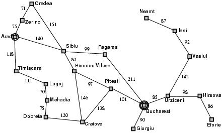

Romênia é uma república unitária semipresidencialista localizada no centro-sudeste da Europa, no norte da península dos Bálcãs e na costa ocidental do mar Negro (Wikipédia).
Abaixo temos um mapa simplificado das rodovias da Romênia:
Utilizando o algoritmo de Dijkstra, podemos encontrar o caminho mais curto entre duas cidades.